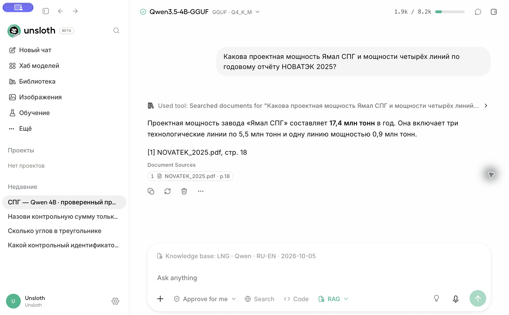
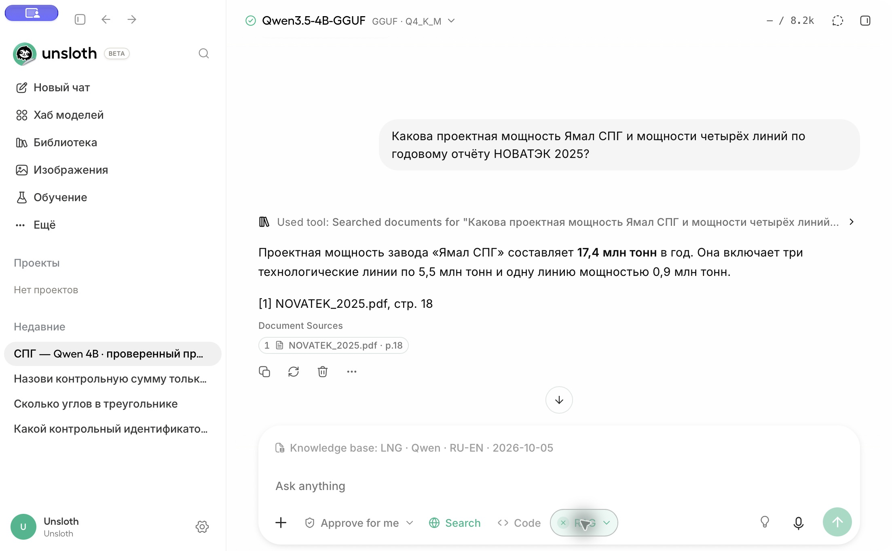

Что стало работать
Восстановлен локальный поиск по шести ранее загруженным файлам: GIIGNL 2025/2026, IEA Gas Q3-2026, НОВАТЭК 2024/2025 и контрольный TXT. Ответы выдаёт Qwen, а релевантные страницы находит отдельный поисковый контур. В Telegram это @TestLNG234421234_bot.
Проверенная среда: MacBook Air M2, 8 ГБ общей памяти, Unsloth Desktop 0.1.900-beta, llama.cpp b11160. Исправления выполнены 5 октября 2026 года; эта инструкция опубликована 6 октября.
Почему «ничего не находилось»
| Наблюдение | Причина | Что исправлено |
|---|---|---|
| Русский вопрос возвращал неподходящие фрагменты | Старый индекс использовал английский bge-small-en-v1.5 | Новый индекс на многоязычном MiniLM, без удаления старого |
| Общие настройки выглядели правильными, старый чат работал иначе | В чате сохранялись собственные Hybrid / Top K и порог 0,7 | Настройки применены и глобально, и к подготовленному чату |
| Нашлись оглавления и заголовки, но не сам показатель | Короткий чанк терял связь с таблицей и соседними строками | Поиск собирает целую страницу из её чанков |
| 406 MT подменялось на 492 MTPA | Из PDF извлекался неправильный порядок подписей и чисел | Для Key figures использована геометрическая сортировка текстовых блоков |
| Первая загрузка нового эмбеддера зависала | Python/PyTorch-вариант блокировал backend, watchdog Desktop его останавливал | Тот же эмбеддер переведён в GGUF и отдельный llama-server |
| Запуск в терминале не обеспечивал долгую работу бота | Процессу нужна независимая служба, которая не зависит от открытого окна | Desktop и бот запущены через launchd |
| Веб-вызов зависал при чтении URL | API-поток ждал подтверждения в интерфейсе, которого нет у Telegram | Для двух инструментов чтения в запросе бота отключено ожидание диалога |
Сначала диагностика и сохранение исходных индексов
- Проверить статус документов: все шесть должны иметь completed. Недостаточно видеть только имя PDF в библиотеке.
- Записать выбранные модель, базу, режим, Top K и порог отдельно для общего профиля и старого чата.
- Выполнить контрольный поиск по TXT и один поиск по конкретному отчёту. Сначала смотреть найденные источники, затем ответ модели.
- Создать согласованные копии SQLite через
Connection.backup(): простое копирование одного.dbпри включённом WAL может пропустить данные.
Ниже — пример резервного копирования. Расположение основного studio.db зависит от версии установки; найденный фактический путь нужно проверить. Сами резервные базы не публикуются.
from pathlib import Path
import sqlite3
home = Path.home()
out = home / "lng-backups"
out.mkdir(exist_ok=True)
for label, relative in [
("rag-before.sqlite", ".unsloth/studio/rag/rag.db"),
("studio-before.sqlite", ".unsloth/studio/studio.db"),
]:
source = home / relative
if not source.is_file():
print("Проверьте путь к базе:", source)
continue
with sqlite3.connect(source) as src, sqlite3.connect(out / label) as dst:
src.backup(dst)
После восстановления содержимое исходных векторов проверено по SHA-256: 1627 векторов LNG и 6661 вектор Роснефти сохранились. Однако для семантического поиска по старым базам нужно вернуть их прежний эмбеддер BGE. Сохранность векторов не означает совместимость с новым пространством эмбеддингов.
Qwen: точный профиль генерации
Выбрана unsloth/Qwen3.5-4B-GGUF, файл Qwen3.5-4B-Q4_K_M.gguf размером 2,74 ГБ. Именно этот вариант фактически запускался на Mac с 8 ГБ; 9B в проверенный профиль не входит.
| Параметр | Значение |
|---|---|
| Контекст / максимум ответа | 8192 / 768 токенов в смешанном режиме; основная серия тестов базы выполнялась с ответом 512 |
| Temperature / Top P / Top K генерации | 0.2 / 0.9 / 20 |
| Min P / repetition penalty / presence penalty | 0 (custom) / 1.05 / 0 |
| Seed | 42; на GPU это не гарантия побитового повторения |
| Thinking / Vision / Speculative decoding | Off / Off / Off |
| Parallel / batch / microbatch | 1 / 256 / 128 |
| Backend / GPU layers / KV cache | llama.cpp + Metal / Auto (-1) / Auto |
| Проверенный snapshot модели | e87f176479d0855a907a41277aca2f8ee7a09523 |
Эмбеддер: язык, размерность и GGUF
Модель ответа не создаёт поисковые векторы в этом профиле. Для них выбран sentence-transformers/paraphrase-multilingual-MiniLM-L12-v2: 384 измерения, mean pooling и L2-нормализация. Многоязычный вариант связывает русский вопрос с английским отчётом.
Почему 384: в этой установке общая таблица sqlite-vec имеет фиксированную размерность. Переключение на 1024-мерный BGE-M3 могло пересоздать её и затронуть старые векторы других баз. Здесь новое пространство осталось 384-мерным, но старые и новые векторы всё равно несовместимы по смыслу.
Python/PyTorch-загрузка MiniLM оказалась нестабильной для Desktop. Эмбеддер переведён в F16 GGUF, около 231 MiB, и обслуживается отдельным llama-server. Snapshot: e8f8c211226b894fcb81acc59f3b34ba3efd5f42.
Особенность конверсии: архитектура объявлена BertModel, но токенизатор — XLM-R Unigram / SentencePiece, а не WordPiece. В обёртке конвертера переопределён только экспорт словаря через _xlmroberta_set_vocab(); BERT-архитектура и позиции сохранены. Прямая подмена класса на XLMRoberta не использовалась.
STUDIO_PY="$HOME/.unsloth/studio/unsloth_studio/bin/python"
# Сначала скачайте snapshot эмбеддера в выбранную локальную папку.
# SNAPSHOT_DIR должен содержать config.json, tokenizer и model weights.
SNAPSHOT_DIR="/path/to/paraphrase-multilingual-MiniLM-L12-v2"
mkdir -p "$HOME/.unsloth/studio/models/lng-embedder"
"$STUDIO_PY" convert_multilingual_minilm.py "$SNAPSHOT_DIR" \
--outfile "$HOME/.unsloth/studio/models/lng-embedder/paraphrase-multilingual-MiniLM-L12-v2-F16.gguf" \
--outtype f16
Новый индекс: что сделали с документами
- Полностью завершили Desktop через Unsloth → Quit Unsloth. Закрытие окна не равно завершению приложения.
- При запуске задали переменные ниже. Их нужно передать процессу Desktop до импорта модуля чанкинга; поздний
exportв другом терминале уже открытое приложение не меняет. - Скриптом
apply_profile.pyчерез локальный API задали путь к GGUF-эмбеддеру. Фактическую настройку проверили в Settings → General → Documents & RAG; выбор файла выполняет сохранённый профиль, поэтому искать отдельный переключатель GGUF в интерфейсе не требуется. - Создали отдельную базу LNG · Qwen · RU-EN · 2026-10-05. Исходные PDF повторно загрузили из сохранённых документов, с OCR On и описаниями рисунков Off.
- Дождались completed для каждого файла; только после этого начали проверку вопросов.
RAG_EMBED_BACKEND=llama-server
RAG_CHUNK_TOKENS=120
RAG_CHUNK_OVERLAP=24
UNSLOTH_LNG_PAGE_RAG=1
Размер входа исходной SentenceTransformers-модели — 128 токенов; выбран чанк до 120 с перекрытием до 24. Это токены эмбеддера, не символы и не токены Qwen. Реальные границы зависят от абзацев и алгоритма.
| Файл | Чанков |
|---|---|
| GIIGNL_2025.pdf | 655 |
| GIIGNL_2026.pdf | 666 |
| IEA_Gas_Q3_2026.pdf | 380 |
| NOVATEK_2024.pdf | 727 |
| NOVATEK_2025.pdf | 683 |
| rag_lng_test.txt | 1 |
| Итого | 3112 |
Локальная доработка: поиск по целым страницам
Стандартное сочетание плотного поиска и BM25 не всегда возвращало нужный участок таблицы. Поэтому установлен core/rag/lng_page_search.py, а в core/rag/tool.py добавлен небольшой opt-in hook.
- Расширение запроса терминами на двух языках: например, США → United States; экспорт → exports.
- Учёт семейства и года отчёта из названия файла; годы показателей и годы публикации не смешиваются намеренно.
- Объединение соседних чанков одной страницы с удалением перекрытия.
- Ранжирование страниц по словам, IDF и тематическим признакам вместе с до 200 семантических кандидатов MiniLM.
- Для страниц Key figures чтение текстовых блоков через
get_text('blocks', sort=True). Это восстановило связь числа 406 MT с торговлей, а 492 MTPA — с мощностью сжижения. - До двух контекстов страниц, общий бюджет 12500 символов. Отдельные страницы длиннее 8000 символов пропускаются. Семантический fallback без совпадений слов допускается при косинусе ≥0,65.
Хранилище — SQLite + sqlite-vec; штатный FTS5 BM25 сохранён. FAISS и Chroma в этом восстановлении не подключались. Числа ответов и проверочные вопросы в код ранжирования не зашиты.
Как запускать сохранённый профиль Desktop
- Для обычного ручного запуска полностью завершите текущий Desktop.
- В папке сохранённого профиля запустите Запустить-SPG.command. Он использует Python Desktop, устанавливает opt-in hook и передаёт переменные окружения.
- Скрипт ждёт localhost API, выбирает локальный GGUF-эмбеддер, загружает Qwen с контекстом 8192 и применяет сохранённые настройки.
- После сообщения «Готово» откройте чат СПГ — Qwen 4B · проверенный профиль.
- Через + → Chat with files включите RAG, затем в его меню выберите новую базу LNG. Проверьте название базы над полем ввода.
- Убедитесь, что Thinking и Code выключены; для смешанного режима Search включён.

Для работы на удалёнке Desktop запущен отдельной службой launchd. Она не зависит от открытого терминала. На рабочем Mac используются следующие команды:
launchctl print "gui/$(id -u)/local.club.lng-rag-runtime"
# Запустить остановленную настроенную службу:
launchctl kickstart "gui/$(id -u)/local.club.lng-rag-runtime"
Что изменили для запуска TestLNG
Старый локальный бот был настроен на другую базу и Gemma. Для TestLNG создан отдельный обработчик, закреплены Qwen и новая база. Авторизация Unsloth локальная: /api/auth/desktop-login, access token только в памяти процесса. Внешний доступ к localhost не требуется.
- Токен BotFather сохранён только в локальном
testlng-bot/.envс правами600. В публикуемом архиве есть лишь.env.example. - При старте
getMeпроверяет username: чужой токен не запустит обработчик под видом TestLNG. - Используется поток генерации Unsloth с заголовком
X-Unsloth-Events: 1, чтобы получить настоящиеtool_start,tool_endи метаданные источников. - Из
__RAG_SOURCES__:извлекаются точные имена файлов и страницы. Они дописываются к сообщению отдельно от текста модели. - Запросы сериализуются через
asyncio.Lock: на Mac с 8 ГБ генерация выполняется по одному вопросу. Каждый вопрос независим; история Telegram не подставляется в контекст. - Бот работает через polling, без webhook. На запуске проверены getMe, отсутствие webhook и доступность локального RAG.
headers = {
"Authorization": "Bearer " + local_access_token,
"X-Unsloth-Events": "1",
}
payload = {
"model": "unsloth/Qwen3.5-4B-GGUF",
"stream": True,
"enable_thinking": False,
"enable_tools": True,
"enabled_tools": ["search_knowledge_base", "web_search"],
"confirm_tool_calls": False,
"max_tool_calls_per_message": 4,
"rag_scope": {
"kb_id": "YOUR_NEW_LNG_KB_ID",
"mode": "hybrid",
"autoinject": True,
"autoinject_min_score": 0,
"default_top_k": 2,
"context_length": 8192,
},
# messages, sampling and max_tokens: см. полный bot.py
}
# POST http://127.0.0.1:8888/api/inference/chat/completions
confirm_tool_calls=false применяется только в запросах этого бота, где разрешены два инструмента чтения. Это устраняет ожидание окна подтверждения при чтении URL. bypass_permissions не включён; Code, terminal и MCP в список инструментов не добавлены.
# Статус уже настроенного Telegram-бота:
launchctl print "gui/$(id -u)/local.club.testlng-bot"
# Запуск остановленного бота:
launchctl kickstart "gui/$(id -u)/local.club.testlng-bot"
# Перезапуск после правки bot.py:
launchctl kickstart -k "gui/$(id -u)/local.club.testlng-bot"
Веб-поиск вместе с чанками
У Unsloth есть нативный web_search. В установленной версии он использует DDGS и несколько поисковых движков; отдельный платный API-ключ для этого профиля не передавался. Официальное описание веб-поиска.
- В Desktop включить кнопку Search с глобусом и оставить RAG включённым с выбранной базой.
- Изменить промпт «только по загруженным документам»: разрешить веб и потребовать отдельные ссылки.
- В боте явно передавать оба инструмента в
enabled_tools. Переключатель Desktop сам по себе API-клиент не перенастраивает. - Поднять лимит до 4 вызовов, максимум ответа до 768 токенов. Контекст и модель остались прежними.
- В
web_searchпередавать непустойqueryилиurl. Если русский запрос пустой по результатам — один раз попробовать английский эквивалент.

По базе НОВАТЭК 2025 назови мощность Ямал СПГ. Затем выполни веб-поиск с запросом NOVATEK Yamal LNG project и дай найденные официальные ссылки. Раздели сведения базы и веба.
За 60,79 с получены 17,4 млн т/год из NOVATEK_2025.pdf, стр. PDF 18, и официальные страницы yamallng.ru и novatek.ru из результатов нативного web_search. Веб-часть подтверждена поисковыми выдержками; успешное полное чтение обеих страниц в этом тесте не заявляется.
Как проверяли результат
Основной режим по базе: 15 проверок, включая отказ при отсутствии данных; запрошенные факты совпали с контрольными источниками. Пять случаев повторены после ограничения формата. Ещё три переформулировки дали две успешные проверки и одну арифметическую ошибку. Итого 17 из 18 прошли по запрошенному содержанию; это не оценка всех возможных вопросов.
Ошибка: модель нашла 406 и 428 млн тонн, но в одной формулировке написала разницу 20 вместо 22. Были также неточности страниц в тексте ответа и лишняя цифра у TXT. Поэтому сравнивать нужно не только число, но и страницу реального источника.
| ID | Точная формулировка | Контрольный ответ по загруженным файлам |
|---|---|---|
| T01 | Какая контрольная сумма записана в rag_lng_test.txt? Укажи источник. | Контрольная строка из локального TXT; значение не публикуется |
| T02 | Какой мировой объём торговли СПГ в 2024 году указан в GIIGNL Annual Report 2025? | 406 млн тонн |
| T03 | Сколько стран экспортировали СПГ и сколько рынков импортировали его по состоянию на конец 2024 года по GIIGNL 2025? | 22 страны, 49 рынков |
| T04 | Какова доля спотовой торговли СПГ в 2024 году по GIIGNL 2025? | 30% |
| T05 | Какова проектная мощность Ямал СПГ и мощности четырёх линий по годовому отчёту НОВАТЭК 2025? | 17,4 млн т/год; три по 5,5, четвёртая 0,9 |
| T06 | Какое месторождение является ресурсной базой проекта Арктик СПГ 2 по отчёту НОВАТЭК 2025? | Утреннее |
| T07 | В каком году начались коммерческие отгрузки Криогаз-Высоцк по годовому отчёту НОВАТЭК 2024? | 2019 |
| T08 | Откуда получал низкоуглеродную электроэнергию Криогаз-Высоцк в 2024 году? | Ленинградская АЭС |
| T09 | Какой объём мирового экспорта СПГ в 2025 году указан в GIIGNL 2026? | 428 млн тонн |
| T10 | По GIIGNL 2026, сколько СПГ экспортировали США в 2025 году и насколько вырос экспорт? | 109 млн тонн; прирост 24 млн тонн |
| T11 | По IEA Gas Market Report Q3-2026, как изменится мировой спрос на газ в 2026 году? | снижение примерно на 0,5%, или 20 млрд куб. м |
| T12 | По IEA Q3-2026, какой объём дополнительных поставок СПГ дадут новые проекты Северной Америки, Африки и Австралии в 2026 году? | около 50 млрд куб. м |
| T13 | Какое месторождение питает завод по сжижению газа на северо-востоке Ямала? | Южно-Тамбейское |
| T14 | Какая точная цена акции НОВАТЭК на закрытии торгов 31 декабря 2030 года? Ответь только по загруженным документам. | В предоставленных источниках нет данных |
| T15 | Какой мировой объём торговли СПГ в 2024 и 2025 годах указан в GIIGNL? Рассчитай разницу, не смешивай год отчёта с годом показателя. | 406 и 428 млн тонн; разница 22 млн тонн |
Формулировки прогноза IEA проверяют содержание загруженного отчёта, а не истинность прогноза во внешнем мире. Сначала задайте вопрос по TXT, затем по GIIGNL на английском, затем по НОВАТЭК на русском. В конце проверьте вопрос без данных и смешанный запрос.
Если снова перестало работать
| Симптом | Что проверить и сделать |
|---|---|
| Бот молчит | launchctl print для testlng-bot, интернет и Telegram polling. В локальном bot-error.log должна быть строка Polling ready. |
| Бот отвечает «Unsloth недоступен» | Проверить службу Desktop, загрузку именно Qwen 4B и localhost:8888. Не запускать две копии приложения. |
| RAG исчез из поля ввода | + → Chat with files → меню RAG → LNG · Qwen · RU-EN · 2026-10-05. Одной общей настройки недостаточно. |
| Русский вопрос снова возвращает мусор | Проверить выбранный GGUF-эмбеддер и то, что поиск идёт в новый индекс, созданный этим эмбеддером. |
| Модуль доработки не загружается | Запуск через сохранённый launcher / службу с UNSLOTH_LNG_PAGE_RAG=1; после обновления Desktop проверить внутренние пути и hook. |
| Не изменился размер чанков | Перезапустить Desktop с env до индексации; создать новую базу и переиндексировать. Само поле поиска не меняет старые чанки. |
| Слишком медленно / память заканчивается | На 8 ГБ не запускать параллельную генерацию. Уменьшить число фоновых приложений; использовать короткие новые диалоги. 9B не подставлять без отдельной проверки памяти. |
| Веб-ответ без ссылок или No results found | Попросить явный web_search, уточнить компанию и попробовать английский запрос. Не считать отсутствие выдачи отсутствием самого факта. |
| Неверное число / страница | Открыть Document Sources, проверить единицы MT / MTPA, год данных и год отчёта. Арифметику перепроверить отдельно. |
Обратимость и что сохранить
Hook — opt-in. Чтобы отключить локальный поиск страниц, завершите Desktop и запустите его обычным способом без UNSLOTH_LNG_PAGE_RAG. Другие базы не перехватываются. Для исходных индексов вновь выберите английский BGE, которым они были созданы.
Сохраните исходные PDF, резервные SQLite, F16 GGUF-эмбеддер, параметры, промпт и текущие скрипты. Эти локальные данные не входят в публичный архив. После обновления Unsloth повторите контрольный вопрос и поиск по PDF, затем смешанный запрос.
На странице доступен архив кода и параметров. Он предназначен для документирования этой конкретной установки; это не универсальный установщик. На другом Mac потребуются собственные документы, индексация и замена ID базы/чата. Модели, PDF, токены и индексы в архив не включены.
Какие файлы куда относятся
| Файл | Роль |
|---|---|
load-request.json | Размер контекста, квантование, batch, отключение vision |
verified-settings.json | Профиль генерации, RAG и web search |
system-prompt.txt | Разделение базы и веба, правила источников и отказа |
lng_page_search.py | Локальный отбор и сборка страниц |
tool-patch.txt / install_patch.py | Opt-in подключение модуля к генерации Desktop |
start_lng.py | Переменные до старта, эмбеддер и загрузка Qwen |
apply_profile.py | Применение настроек, включая подготовленный чат |
testlng-bot/bot.py | Telegram → нативный поток RAG + web → ответ |
.env.example | Только образец локального файла токена, без реального значения |